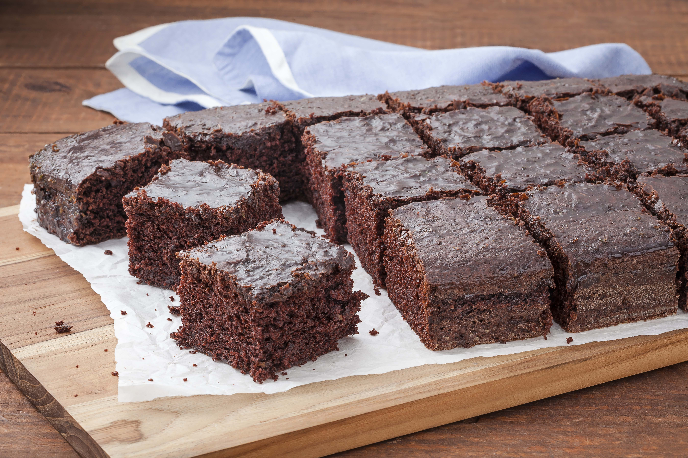

Receita para bolo de chocolate
Receita simples e prática para o bolo mais querido do brasileiro

Ingredientes
Massa
- 4 colheres (sopa) de chocolate em pó
- 2 colheres (sopa) de manteiga
- 3 xícaras (chá) de farinha de trigo
- 4 ovos
- 2 colheres (sopa) de fermento
- 1 xícara (chá) de leite
- 3 colheres (sopa) de açúcar
Modo de fazer
- Bata por 5 minutos em um liquidificador os ovos, o chocolate em pó, a manteiga, a farinha de trigo, o açúcar e o leite
- Adicione o fermento e misture com uma espátula delicadamente
- Em uma forma untada, despeje a massa e asse em forno médio (180 ºC) preaquecido por cerca de 40 minutos. Não se esqueça de usar uma
forma alta para essa receita: como leva duas colheres de fermento, ela cresce bastante